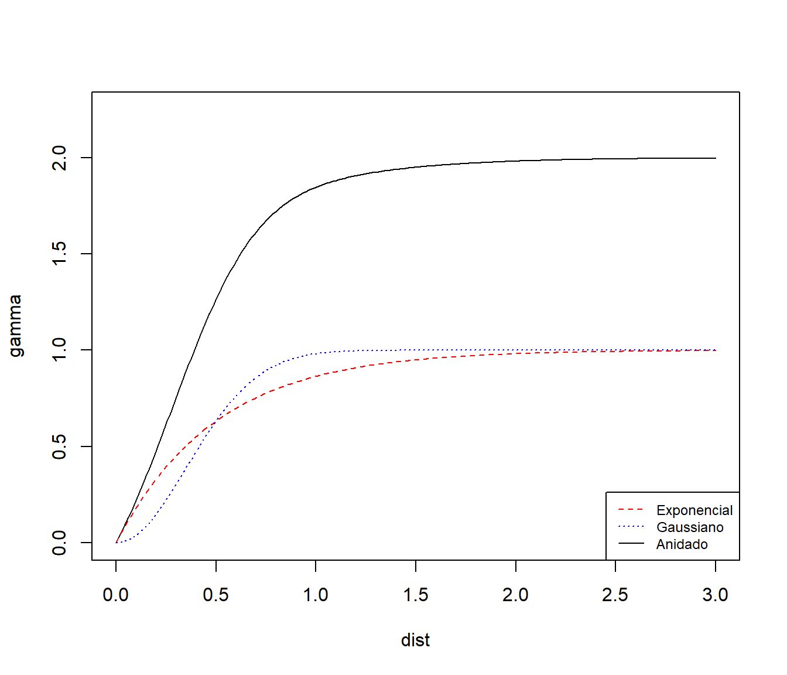

3.2 Modelos de semivariogramas
Los variogramas deben ser condicionalmente semidefinidos negativos, una propiedad que los estimadores tradicionales normalmente no poseen. Tradicionalmente esto se remedia ajustando un modelo paramétrico válido al estimador muestral (Sección 3.3). En la Sección 3.2.1 se presentan algunos de los modelos isotrópicos tradicionalmente utilizados en geoestadística. Estos modelos son empleados también en ciertos casos como estructuras básicas a partir de las cuales se construyen modelos más complejos, como modelos anisotrópicos (Sección 3.2.2) o los denominados modelos lineales de regionalización (Sección 3.2.3).
3.2.1 Modelos paramétricos isotrópicos
A continuación se presentan algunos de los modelos isotrópicos de semivariograma más utilizados en geoestadística (una revisión más completa se tiene por ejemplo en Chilès y Delfiner, 1999, sección 2.5.1). En la notación utilizada en las parametrizaciones \(c_{0} \geq 0\) representa el efecto nugget, \(c_1 \geq 0\) el umbral parcial (en el caso de variogramas acotados, con \(\sigma^2= c_0 + c_1\)) y \(a>0\) el rango (si existe) o el parámetro de escala. En el caso de semivariogramas acotados que alcanzan el umbral asintóticamente (rango infinito), el parámetro \(a\) representa el rango práctico, definido como la distancia en la que el valor del semivariograma es el 95% del umbral parcial. En la Figura 3.1 se tienen algunos ejemplos de las formas de algunos de estos semivariogramas.
Modelo esférico: \[\gamma(\mathbf{h}\left| \boldsymbol{\theta}\right. ) = \left\{ \begin{array}{ll} 0 & \text{si} \left\| \mathbf{h}\right\| =0 \\ c_{0} +c_1 \left\{ \dfrac{3}{2} \dfrac{\left\| \mathbf{h}\right\| }{a} -\dfrac{1}{2} \left( \dfrac{\left\| \mathbf{h}\right\| }{a} \right) 3\right\} & \text{si} 0<\left\| \mathbf{h}\right\| \leq a \\ c_{0} +c_1 & \text{si} \left\| \mathbf{h}\right\| >a \end{array} \right.\] válido en \(\mathbb{R}^{d}\), \(d=1,2,3\).
Modelo exponencial: \[\gamma(\mathbf{h}\left| \boldsymbol{\theta}\right. )\ =\ \left\{ \begin{array}{ll} 0 & \text{si}\ \mathbf{h}=\mathbf{0} \\ c_{0} + c_1 \left( 1-\exp \left( -\dfrac{3\left\| \mathbf{h}\right\| }{a} \right) \right) & \text{si}\ \mathbf{h}\neq \mathbf{0} \end{array} \right.\] válido en \(\mathbb{R}^{d}\), \(\forall d \geq 1\).
Modelo racional cuadrático: \[\gamma(\mathbf{h}\left| \boldsymbol{\theta}\right. )\ =\ \left\{ \begin{array}{ll} 0 & \text{si}\ \mathbf{h}=\mathbf{0} \\ c_{0} + c_1 \dfrac{\left\| \mathbf{h}\right\|^2 }{\frac{1}{19} a^2 +\left\| \mathbf{h}\right\|^2 } & \text{si}\ \mathbf{h}\neq \mathbf{0} \end{array} \right.\] válido en \(\mathbb{R}^{d}\), \(\forall d \geq 1\).
Modelo potencial: \[\gamma(\mathbf{h}\left| \boldsymbol{\theta}\right. )\ =\ \left\{ \begin{array}{ll} 0 & \text{si}\ \mathbf{h}=\mathbf{0} \\ c_{0} + a\left\| \mathbf{h}\right\|^{\lambda } & \text{si}\ \mathbf{h}\neq \mathbf{0} \end{array} \right.\] con \(0\leq \lambda <2\) y válido en \(\mathbb{R}^{d}\), \(\forall d \geq 1\). En el caso de \(\lambda =1\) se obtiene el conocido modelo lineal.
Modelo exponencial-potencial: \[\gamma(\mathbf{h}\left| \boldsymbol{\theta}\right. )\ =\ \left\{ \begin{array}{ll} 0 & \text{si}\ \mathbf{h}=\mathbf{0} \\ c_{0} + c_1 \left( 1-\exp \left( -3\left( \dfrac{\left\| \mathbf{h}\right\| }{a} \right)^{\lambda } \right) \right) & \text{si}\ \mathbf{h}\neq \mathbf{0} \end{array} \right.\] con \(0\leq \lambda \leq 2\) y válido en \(\mathbb{R}^{d}\), \(\forall d \geq 1\). Cuando \(\lambda =2\) es denominado modelo gausiano; este modelo sin embargo no debería ser utilizado en la predicción espacial debido a las inestabilidades numéricas que produce en los algoritmos kriging (especialmente cuando el efecto nugget es grande; ver p.e. Wackernagel, 1998, pp. 120-123). El modelo exponencial se obtiene también como caso particular cuando \(\lambda =1\).
Modelo oscilatorio: \[\gamma(\mathbf{h}\left| \boldsymbol{\theta}\right. )\ =\ \left\{ \begin{array}{ll} 0 & \text{si}\ \mathbf{h}=\mathbf{0} \\ c_{0} + c_1 \left( 1-\dfrac{a}{\left\| \mathbf{h}\right\| } \text{sen} \left( \dfrac{\left\| \mathbf{h}\right\| }{a} \right) \right) & \text{si}\ \mathbf{h}\neq \mathbf{0} \end{array} \right.\] válido en \(\mathbb{R}^{d}\), \(d=1,2,3\). Este modelo con forma de onda (hay correlaciones negativas) alcanza su valor máximo ( \(c_{0} +1.218c_1\)) cuando \(\left\| \mathbf{h}\right\| \simeq 4.5a\), siendo \(a\) el parámetro de escala.
Modelo de Matérn (o K-Bessel): \[\gamma(\mathbf{h}\left| \boldsymbol{\theta}\right. )\ =\ \left\{ \begin{array}{ll} 0 & \text{si}\ \mathbf{h}=\mathbf{0} \\ c_{0} + c_1 \left( 1-\dfrac{1}{2^{\nu -1} \gamma(\nu )} \left( \dfrac{\left\| \mathbf{h}\right\| }{a} \right)^{\nu } K_{\nu } \left( \dfrac{\left\| \mathbf{h}\right\| }{a} \right) \right) & \text{si}\ \mathbf{h}\neq \mathbf{0} \end{array} \right.\] siendo \(\nu \geq 0\) (un parámetro de suavizado) y \(K_{\nu }\) la función de Bessel modificada de tercera clase de orden \(\nu\) (ver p.e. Abramowitz y Stegun, 1965, pp. 374-379). Este modelo es válido en \(\mathbb{R}^{d}\), \(\forall d \geq 1\). El modelo exponencial se obtiene como caso particular cuando \(\nu =\frac{1}{2}\) y en el límite \(\nu \rightarrow \infty\) el modelo gausiano.
En gstat se emplea la función vgm() (Variogram Model) para definir un modelo de variograma:
vgm(psill = NA, model, range = NA, nugget, add.to, anis, kappa = 0.5, ...)psill: umbral parcial (\(c_1\)).model: cadena de texto que identifica el modelo (e.g."Exp","Sph","Gau","Mat"…).range: rango o parámetro de escala (proporcional a \(a\)).nugget: efecto nugget (\(c_0\)).kappa: parametro de suavizado (\(\nu\) en el modelo de Matérn).add.to: permite combinar modelos (Sección 3.2.3).anis: parámetros de anisotropía (Sección 3.2.2).
Lo habitual es definir un modelo para posteriormente estimar sus parámetros utilizando los empleados en la definición como valores iniciales. También se puede llamar a esta función con el modelo como primer y único argumento, indicando que los parámetros son desconocidos (o que tome los valores por defecto en el ajuste). Si se ejecuta sin argumentos devuelve un listado de todos los modelos:
vgm()## short long
## 1 Nug Nug (nugget)
## 2 Exp Exp (exponential)
## 3 Sph Sph (spherical)
## 4 Gau Gau (gaussian)
## 5 Exc Exclass (Exponential class/stable)
## 6 Mat Mat (Matern)
## 7 Ste Mat (Matern, M. Stein's parameterization)
## 8 Cir Cir (circular)
## 9 Lin Lin (linear)
## 10 Bes Bes (bessel)
## 11 Pen Pen (pentaspherical)
## 12 Per Per (periodic)
## 13 Wav Wav (wave)
## 14 Hol Hol (hole)
## 15 Log Log (logarithmic)
## 16 Pow Pow (power)
## 17 Spl Spl (spline)
## 18 Leg Leg (Legendre)
## 19 Err Err (Measurement error)
## 20 Int Int (Intercept)La función show.vgms() genera gráficos con los distintos modelos (por defecto los 17 primeros):
show.vgms()
Figura 3.1: Representaciones de los modelos paramétricos isotrópicos de semivariogramas implementados en el paquete gstat.
show.vgms(kappa.range = c(0.1, 0.5, 1, 5, 10), max = 10)Figura 3.2: Modelo de Matérn con distintos valores del parámetro de suavizado.
v1 <- vgm(psill = 1, model = "Exp", range = 0.5, nugget = 0)
v1## model psill range
## 1 Nug 0 0.0
## 2 Exp 1 0.5plot(v1, cutoff = 3)Figura 3.3: Ejemplo de modelo exponencial.
3.2.2 Modelado de anisotropía
La hipótesis de isotropía simplifica notablemente el modelado de la dependencia espacial por lo que la mayoría de los modelos (básicos) de semivariogramas considerados en geoestadística son isotrópicos (Sección XX). Sin embargo, en muchos casos no se puede asumir que la dependencia es igual en cualquier dirección (uno de los ejemplos más claros es el caso espacio-temporal, donde en principio no es razonable pensar que un salto espacial es equivalente a un salto temporal). En esos casos se suelen considerar ligeras variaciones de la hipótesis de isotropía para modelar la dependencia espacial. En esta sección se comentan brevemente las distintas aproximaciones tradicionalmente consideradas en geoestadística (para más detalles ver p.e. Chilès y Delfiner, 1999, sección 2.5.2, o Goovaerts, 1997, sección 4.2.2), otras aproximaciones adicionales se tratarán en el Capítulo 7 (caso espacio-temporal).
Cuando el variograma es función de la dirección además de la magnitud del salto, se dice que el variograma es anisotrópico (no isotrópico). Los tipos de anisotropía habitualmente considerados son:
- Anisotropía geométrica: cuando el umbral permanece constante mientras que el rango varía con la dirección.
- Anisotropía zonal: cuando el umbral del semivariograma varía con la dirección (también se denomina anisotropía estratificada).
- Combinación de las anteriores.
La anisotropía geométrica se puede corregir mediante una transformación lineal del vector de salto \(\mathbf{h}\): \[\gamma(\mathbf{h})=\gamma ^{0} \left( \left\| \mathbf{A}\mathbf{h}\right\| \right) ,\forall \mathbf{h}\in \mathbb{R}^{d},\] siendo \(\mathbf{A}\) una matriz cuadrada \(d\times d\) y \(\gamma ^{0} (\cdot)\) un semivariograma isotrópico11. En este caso se dice que el variograma es geométricamente anisotrópico. Por ejemplo, en el caso bidimensional, se suelen considerar una matriz de la forma: \[\mathbf{A}=\left( \begin{array}{cc} 1 & 0 \\ 0 & a_2/a_1 \end{array} \right) \left( \begin{array}{cc} \cos \theta & \sin\theta \\ \text{-} \sin\theta & \cos \theta \end{array} \right),\] que se corresponde con las direcciones principales de anisotropía \(\theta\) y \(\theta + \frac{\pi }{\text{2}}\) (normalmente se toma \(\theta\) igual a la dirección de máximo rango). Esto puede extenderse fácilmente para el caso tridimensional (ver p.e. Chilès y Delfiner, 1999, pp. 94-95).
En gstat se puede definir anisotropía mediante el argumento anis de la función vgm().
En dos dimensiones es un vector con dos componentes aniso = c(alpha, ratio), alpha es el ángulo para la dirección principal de variabilidad (medido en el sentido del reloj partiendo de la dirección norte) y ratio la relación entre el rango mínimo y máximo (\(0 \leq ratio \leq 1\)).
Ejemplo:
v <- vgm(1, "Exp", 5, anis = c(30, 0.1))
str(v)## Classes 'variogramModel' and 'data.frame': 1 obs. of 9 variables:
## $ model: Factor w/ 20 levels "Nug","Exp","Sph",..: 2
## $ psill: num 1
## $ range: num 5
## $ kappa: num 0.5
## $ ang1 : num 30
## $ ang2 : num 0
## $ ang3 : num 0
## $ anis1: num 0.1
## $ anis2: num 1plot_ellipse_2d <- function(xc = 0, yc = 0, l1 = 10, l2 = 1, phi = pi/3,
by = 0.01, asp = 1, ...) {
# xc, yc: centro
# l1, l2: longitud ejes
# phi: angulo del eje 1 respecto al eje x
t <- seq(0, 2*pi, by)
x <- xc + l1*cos(t)*cos(phi) - l2*sin(t)*sin(phi)
y <- yc + l1*cos(t)*sin(phi) + l2*sin(t)*cos(phi)
plot(x, y, type = "l", asp = asp, ...)
}
with(v, plot_ellipse_2d(l1 = range, l2 = range*anis1,
phi = (90 - ang1)*pi/180))
abline(h = 0, lty = 2)
abline(v = 0, lty = 2)En el caso de la anisotropía zonal se suele considerar una combinación de un semivariograma isotrópico más otros “zonales” que depende solamente de la distancia en ciertas direcciones (o componentes del vector de salto). Por ejemplo, en el caso bidimensional, si \(\phi\) es la dirección de mayor varianza se suele considerar una combinación de la forma: \[\gamma(\mathbf{h})=\gamma_1 (\left\| \mathbf{h}\right\|)+\gamma_2(h_{\phi }),\] siendo \(\gamma_1 (\cdot)\) y \(\gamma_2 (\cdot)\) semivariogramas isotrópicos, y \(h_{\phi } =\cos (\phi)h_1 +\sin(\phi)h_2\) el salto en la dirección \(\phi\), para \(\mathbf{h}=(h_1 ,h_2)\in \mathbb{R} ^{2}\). Es importante destacar que este tipo de anisotropías pueden causar la aparición de problemas al realizar predicción espacial (ver p.e. Myers y Journel, 1990; y Rouhani y Myers, 1990), como por ejemplo dar lugar a sistemas kriging no válidos con ciertas configuraciones de los datos. Hay que tener un especial cuidado cuando el covariograma es expresado como suma de covariogramas unidimensionales, en cuyo caso el resultado puede ser únicamente condicionalmente semidefinido positivo sobre un dominio multidimensional.
Este tipo de modelos son casos particulares del modelo lineal de regionalización descrito en la siguiente sección.
Una variante de la anisotropía zonal es el caso de covariogramas separables (también denominados factorizables) en componentes del vector de salto. Por ejemplo, un covariograma completamente separable en \(\mathbb{R}^2\) es de la forma \(C(h_1, h_2)= C_1(h_1)C_2(h_2)\), siendo \(C_1(\cdot)\) y \(C_2(\cdot)\) covariogramas en \(\mathbb{R}^{1}\). En este caso se puede pensar que el proceso espacial se obtiene como producto de procesos unidimensionales independientes definidos sobre cada uno de los ejes de coordenadas. Este tipo de modelos se utilizan habitualmente en geoestadística espacio-temporal (aunque no permiten modelar interacciones).
3.2.3 El modelo lineal de regionalización
En gstat se pueden definir modelos de este tipo empleando el parámetro add.to de la función vgm().
v2 <- vgm(psill = 1, model = "Gau", range = 0.5)
v12 <- vgm(psill = 1, model = "Gau", range = 0.5, add.to = v1)
v12## model psill range
## 1 Nug 0 0.0
## 2 Exp 1 0.5
## 3 Gau 1 0.5plot(variogramLine(v12, maxdist = 3), type = "l", ylim = c(0, 2.25))
lines(variogramLine(v1, maxdist = 3), col = "red", lty = 2)
lines(variogramLine(v2, maxdist = 3), col = "blue", lty = 3)
legend("bottomright", c("Exponencial", "Gaussiano", "Anidado"), lty = c(2, 3, 1),
col = c("red", "blue", "black"), cex = 0.75)
Esta idea (que el espacio euclídeo no es apropiado para medir distancias entre posiciones espaciales pero una transformación lineal de él sí) ha sido también generalizada para el caso de deformaciones no lineales del espacio. Por ejemplo, Sampson y Guttorp (1992) consideraron transformaciones no lineales obtenidas mediante técnicas de escalamiento óptimo multidimensional.↩︎